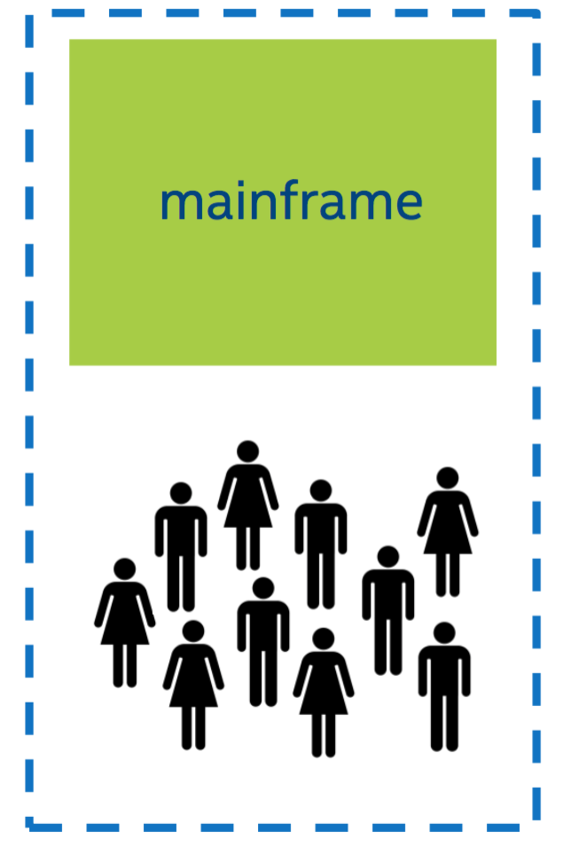
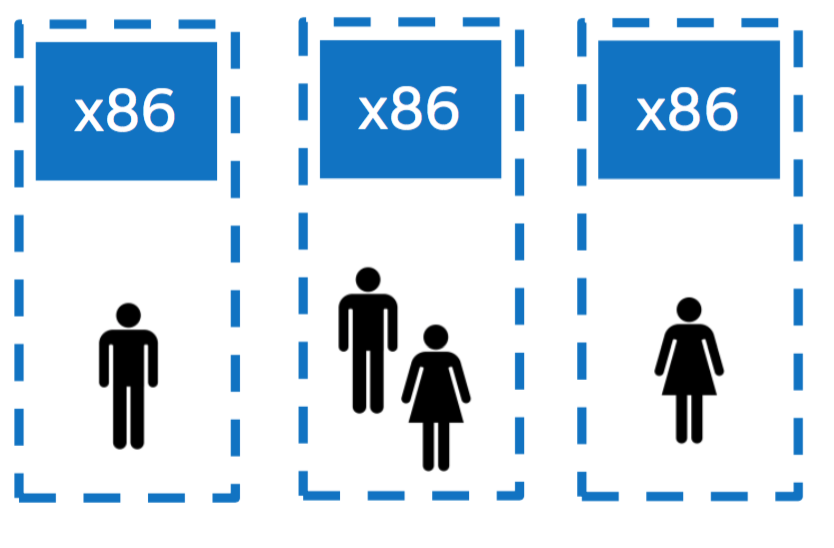
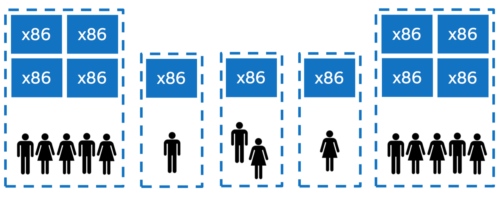
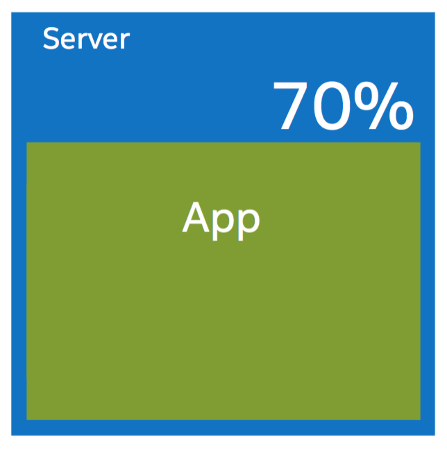
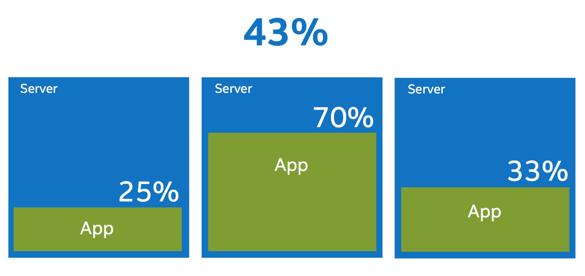
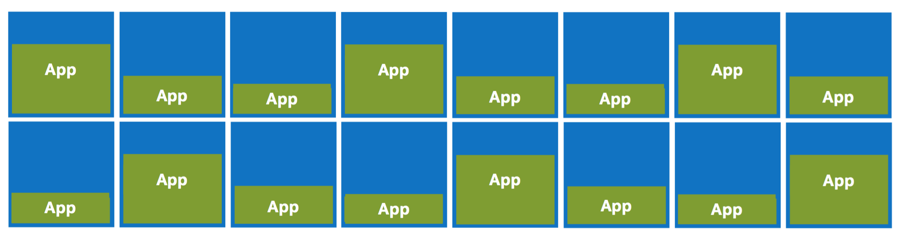
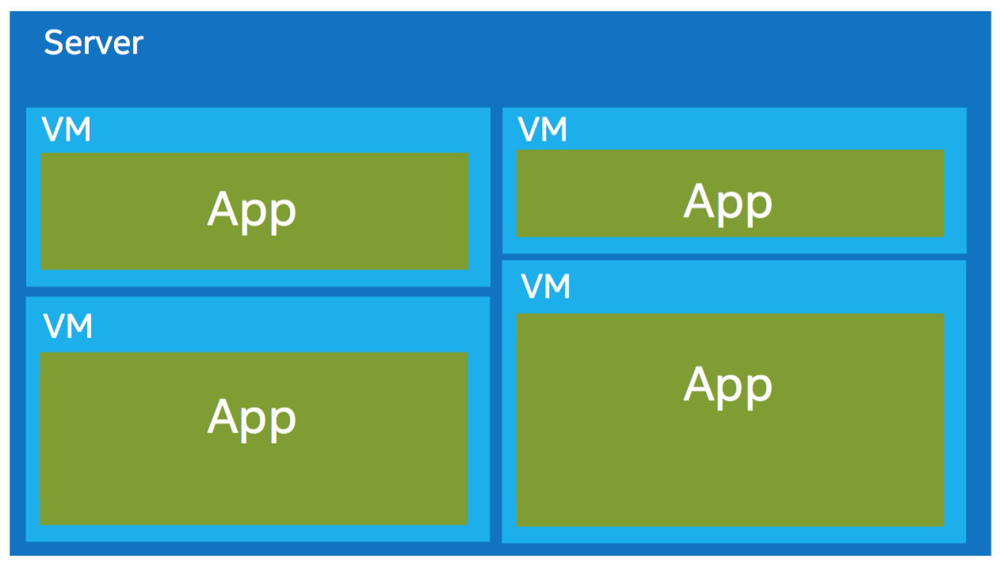
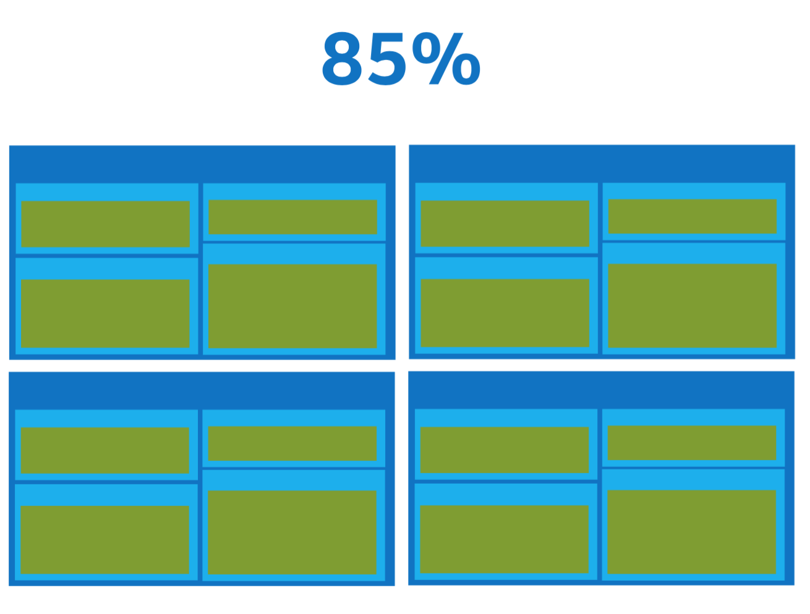

Les enjeux du développeur en 2015

ISEN Brest - 2015
Par Pierre Zemb
+Me

Pierre Zemb
- Etudiant en Génie Logiciel
- Alternant à OVH Brest
Software is CHANGING

L'histoire du déploiement d'applications
Bare-metal, Docker Containers, and Virtualization: The Growing Choices for Cloud Applications
L'histoire du déploiement d'applications

L'histoire du déploiement d'applications
L'histoire du déploiement d'applications
L'histoire du déploiement d'applications
L'histoire du déploiement d'applications
L'histoire du déploiement d'applications
L'histoire du déploiement d'applications
L'histoire du déploiement d'applications
L'histoire du déploiement d'applications

L'histoire du déploiement d'applications
L'histoire du déploiement d'applications
L'histoire du déploiement d'applications

La différence entre avant et après?
Le serveur est vu comme un service !
Le cloud
Fournir du service à la demande/à la volée
Plusieurs types:
- Software As a Service (SaaS)
- Plateform As a Service (PaaS)
- Container As a Service (CaaS)
- Infrastructure As a Service (IaaS)
- ...
La différence

Comme l'électricité
Back to reality

L'informatique n'est pas industrialisé
Packaging is the solution

The new stack
- Application Ops
- Cluster Ops
- Kernel/OS Ops
- Hardware Ops
Les microservices
"Write programs that do one thing, and do it well. Write programs that work together"
- UNIX Philosophy
Disparition de l'application monolithique
Apparition des microservices

Exemple d'application monolithe

Exemple de microservices

Avantages des microservices
- Un micro-service possède un rôle
- Faible nombre de lignes
- S'utilise très facilement dans un conteneur
- Brique de communication standard(API,broker,RPC)
- Coût minimal de réécriture
- On peut utiliser le language qu'on veut
Désavantages des microservices
- Pas facile à débugguer
- Demande de grands changements